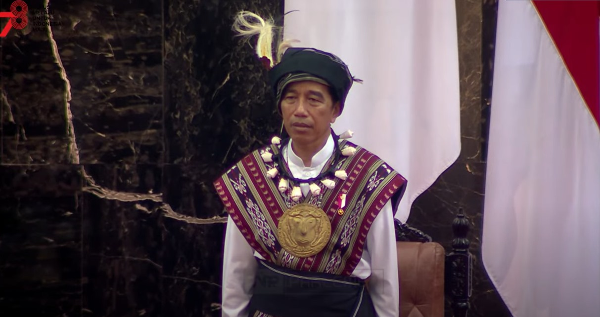
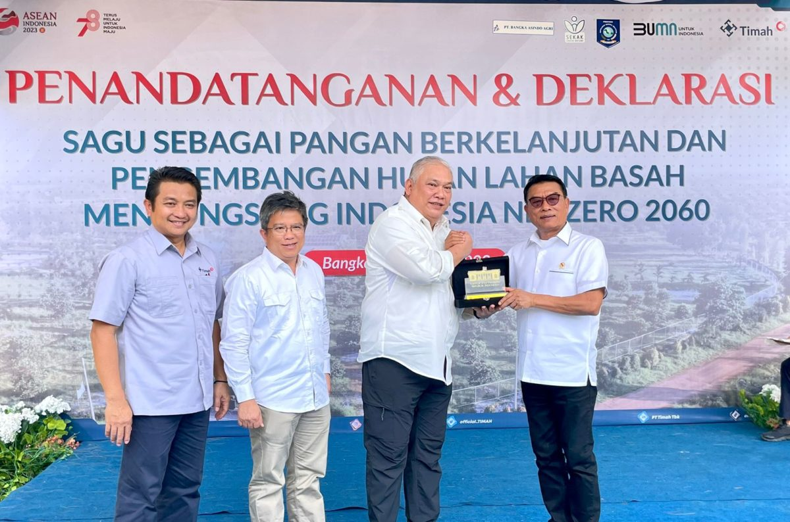
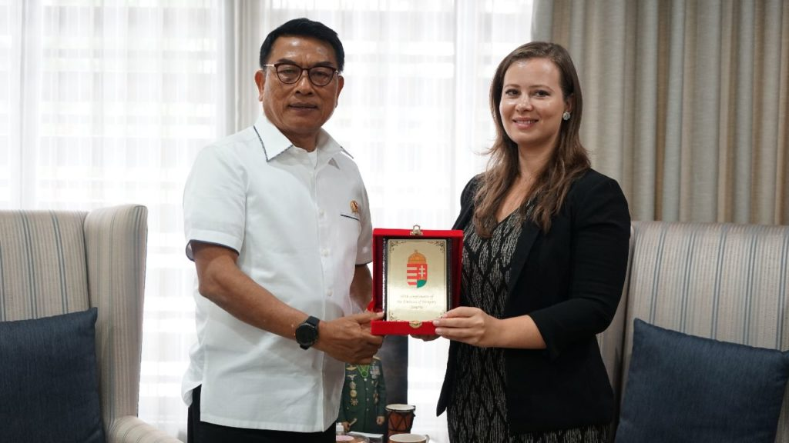
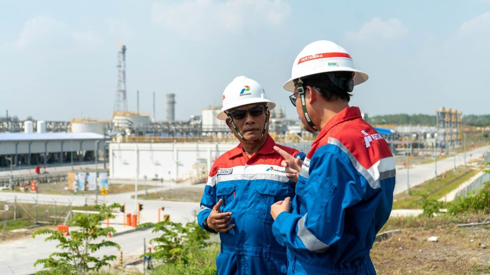
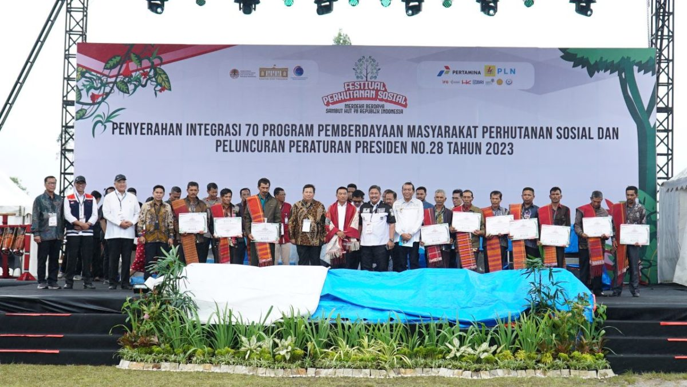
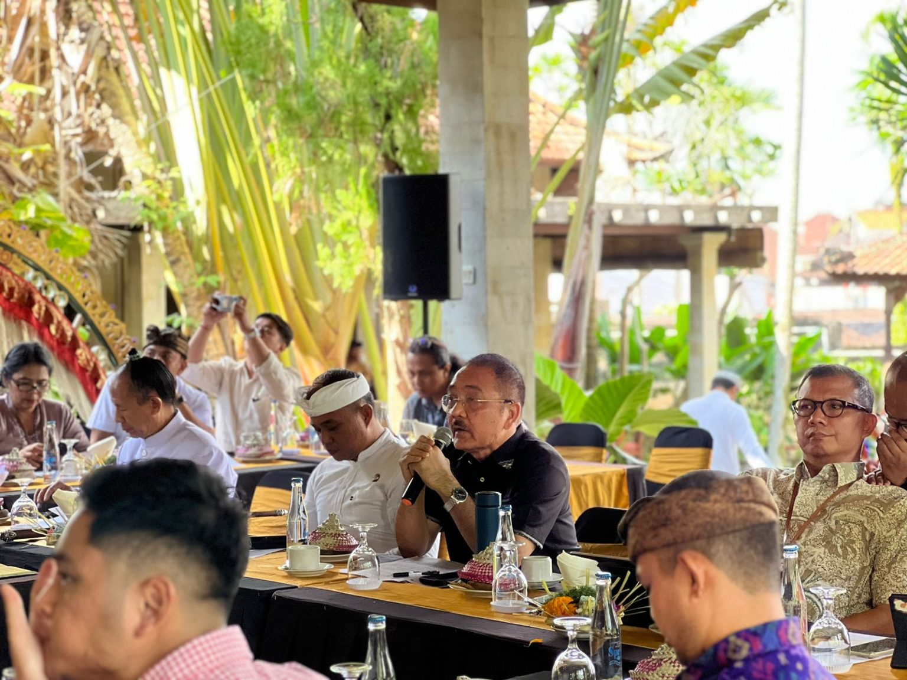

Home
News
Deputies
Task Forces
Videos
ID
EN
News

KSP: President Jokowi Brings Tanimbar Culture at the Annual State Speeches

Anticipate World Food Crisis, Moeldoko Highlights Sago as Staple Alternative In Bangka Belitung

Moeldoko Met Ambassador of Hungary to Indonesia: Discuss Concrete Action to The Multi-lane Free Flow Tech in Bali Mandara Toll.

Moeldoko: KSP Fully Supports Jambaran Tiung Biru Gas Project

Moeldoko: Indonesia's Social Forestry Programme Supports Local Communities, 662 Households Receive Empowerment Program Assistance

KSP: Ubud Prepares to Redefine Culinary Tourism on a Global Scale